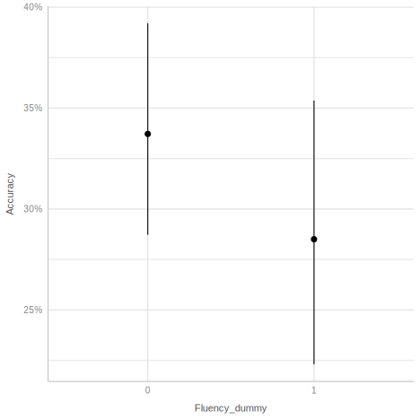

Toward A Beta Model: A Tutorial For Using Beta Regression In Pychological Research To Analyze Proportional and Percentage Data
Jason Geller1, Robert Kubinec, and Matti Vuorre
1Department of Psychology and Neuroscience, Boston College
Author Note
Jason Geller  http://orcid.org/0000-0002-7459-4505
http://orcid.org/0000-0002-7459-4505
Correspondence concerning this article should be addressed to Jason Geller, Department of Psychology and Neuroscience, Boston College, McGuinn 300, Chestnut Hill, MA 1335, USA, Email: drjasongeller@gmail.com
Abstract
Rates, percentages, and proportional data are widespread in psychology. These data are usually analyzed with methods falling under the general linear model, which are not ideal for this type of data. A better alterantive is the beta regession model which is based on the beta distribution. A beta regression can be used to model data that is non-normal, heteroscedastic, and bounded between an interval [0,1]. Thus, the beta regression model is well-suited to examine outcomes in psycholgical research expressed as proportions, percentages, or ratios. The overall purpose of this tutorial is to give researchers a hands-on demonstration of how to use beta regression using a real example from the psychological literature. First, we introduce the beta distribution and the beta regression model highlighting crucial components and assumptions. Second, we highlight how to conduct a beta regression in R using an example dataset from the learning and memory literature. Some extensions of the beta model are then discussed (e.g., zero-inflated, zero- one-inflated, and ordered beta). We present accompanying R code throughout. All code to reproduce this paper can be found on Github:
Keywords: Beta regression, tutorial, cognitive psychology, learning and memory
Toward A Beta Model: A Tutorial For Using Beta Regression In Pychological Research To Analyze Proportional and Percentage Data
In psychological research it is quite common to use response outcomes that are rates, percentages, or proportional in nature. For example, it is quite common in educational and cognitive research to measure learning by looking at accuracy on a final test. To make this more concreate, let’s say you run a memory experiment wherein participants read a short passage pertaining to some topic or subject. After a short distractor task, participants completed a final memory test consisting of 10 short-answer questions, each worth a different number of points (e.g., question 1 may be worth 4 points while question 2 may be worth 1 point). Your estimand of interest is the total number of correct answers out of the total possible points for each question. With this as your main outcome, the resulting metric would be proportional in nature. How do you analyze this type of data?
Statistical analysis of proportions can present numerous difficulties. By definition, proportions are limited to numerical values between, and including, 0 and 1, and the variability in the observed proportions usually varies systematically with the mean of the response. It is quite common to analyze proportional outcomes using methods falling under the general linear model (GLM). There are several issues with this approach, however. First, the GLM assumes the residuals in the model are normal distributed. Second, it assumes an unbounded distribution that can extend from -\infty to \infty. Lastly, the GLM assumes constant residuals across varying levels of variables in the model. These assumptions are often violated when dealing with proportional data, which are typically bounded between 0 and 1 and may not follow a normal distribution (Ferrari & Cribari-Neto, 2004; Paolino, 2001). Adopting a model that does not capture your data accurately can have deleterious consequences, such as missing a true effect when it exists (Type 2 error), or mistaking an effect as real when it is not (Type 1 error). A goal for any researcher trying to draw inferences from their data is to fit a model that accurately captures the important features of the data and has predictive utility (Yarkoni & Westfall, 2017).
The issues related to analyzing proportional data are not new (see (Bartlett, 1936)). Luckily, several analysis strategies are available to deal with them. One such approach we highlight here is beta regression (Ferrari & Cribari-Neto, 2004; Paolino, 2001) and some of its alternatives. With the combination of open-source programming languages like R (R Core Team, 2024) and the great community of package developers, it is becoming trivial to run analyses like beta regression. However, adoption of these methods, especially in psychology, is sparse. A quick Web of Science search for a 10 year period spanning 2014-2024 using (TS=(Psychology)) AND TS=(beta regression) as search terms returned fewer than 20 articles. One reason for the lack of adaptation could be the lack of resources available to wider community (but see (Heiss, 2021); (Vuorre, 2019); (Bendixen & Purzycki, 2023)). We attempt to the rectify this herein.
In this article, we plan to (a) give a brief, non-technical overview of the principles underlying beta regression, (b) walk-through an empirical example of applying beta regression using popular frequentist and Bayesian packages in the popular R programming language and (c) highlight the the extensions which are most relevant to researchers in psychology (e.g., zero-inflated, zero-one-inflated, and ordered beta regressions).
To make this tutorial useful, we will use the popular open source programming language R (R Core Team, 2024). We integrate key code chunks into the main text throughout so the reader can follow along. This manuscript is fully reproducible as it is written in quarto and is publicly available:.
Because frequentist statistics are still quite popular in psychology we show to perform beta regression using frequentist packages like betareg (Cribari-Neto & Zeileis, 2010a) and glmmTMB (Brooks et al., 2017) (if you have nested type data or working with more complex models). We, however, also highlight how to run these models from a Bayesian framework using the brms (Bürkner, 2017a) package. Our main goal for this tutorial is be maximally useful regardless of statistical proclivities.
Beta distribution
Going back to our example from the introduction, our main measure is continuous varying between 0 and 1. Given this, what kind of distribution can be used to fit this data? The beta distribution is perfect for analyzing outcomes like proportions, percentages, and ratios.1 The beta distribution has some desirable characteristics that make it ideal for analyzing this type of data: It is continuous, it is limited to numbers that fall between 0 and 1, and it highly flexible—it can take on a number of different distribution shapes. It is important to note that the beta distribution excludes numbers that are exactly 0 and exactly 1. That is, it cannot model values that are exactly 0 or 1.
The beta distribution can take on a number of different shapes. The location, skew, and spread of the distribution is controlled by two parameters: shape1 and shape2. Shape 1 is sometimes called \alpha and shape 2 is sometimes called \beta. Together these two parameters shape the density curve of the distribution. For example, let’s suppose a participant got 4 out of 6 correct on a test item. We can take the number of correct on that particular test item (4) and divide that by the number of correct (4) + number of incorrect (2) and plot the resulting density curve. Shape1 in this example would be 4 (number of points received). This parameter reflects the number of successes. Shape2 would be 2–the number of points not received. This parameter reflects the number of failures. Looking at Figure 1a, we see the distribution for one of our questions is shifted towards one indicating higher accuracy on the exam. If we reversed the values of the two parameters, we would get a distribution shifted towards 0 (Figure 1b), indicating a lower accuracy. By adjusting the values of two parameters, we can get a wide range of distributions (e.g., u-shaped, inverted u-shaped , normal, or uniform). As can be seen, the beta distribution is a distribution of proportions or probabilities.
However, the canonical parametrization of \alpha and \beta does not lend itself to the regression framework. Thus, it is quite common to talk about \mu and \phi instead, where \mu represents the mean or average, and \phi represents the precision. We can reparamterize \alpha and \beta into \mu and \phi:
\begin{equation}
\begin{aligned}[t]
\text{Shape 1:} && a &= \mu \phi \\
\text{Shape 2:} && b &= (1 - \mu) \phi
\end{aligned}
\qquad\qquad\qquad
\begin{aligned}[t]
\text{Mean:} && \mu &= \frac{a}{a + b} \\
\text{Precision:} && \phi &= a + b
\end{aligned}
\end{equation}
The variance is a function of \mu and \phi:
\frac{\mu \cdot (1 - \mu)}{1 + \phi}
Beta regression
Beta regression provides a means to relate predictors to the parameters of a beta-distributed response variable. The beta regression is a two-part model model that It utilizes a link function (commonly a logit) to model the mean of our response variable as a function of the predictor variables, while another link function models the dispersion parameter (commonly a log). This approach respects the bounded nature of the data and allows for heteroskedasticity, making it highly appropriate for data that represents proportions or rates.
Example
Data and Methods
Now we have built up an intuition about the beta distribution we can start to analyze some data. The principles of beta regression are best understood in the context of a real data set. The example we are gonna use comes from the learning and memory literature. A whole host of literature has shown extrinic cues like fluency (i.e., how easy something is to process) can influence metamemory (i.e., how well we think we will remember something). As an interesting example, when an instructor uses non-verbal gestures, has variable voice dynamics, moves about the space, and includes appropriate pauses when delivering content they are previeved as more fluent and this can influence our perceptions of how well we will remember something, but does not influence actual memory performance, or what we learn (Carpenter et al., 2013; Toftness et al., 2017; Witherby & Carpenter, 2022). Seeing a fluent instructor makes it more likely individuals will think they will remember more content, but it has an actual weak effect on actual memory performance. However, in one study Wilford et al. (2020) showed fluency impacts actual memory. In several experiments, participants watched an instructor discussing the genetics of calico cats and mechanisms of skin wrinkling. The instructor was either fluent and disfluent. Participants who wacthed the fluent videos remembered more information on a final test compared to participants who watched a disfluent instructor discussing the same things. Given the interesting, and contradictory results, we chose this paper to highlight. In the current tutorial we are going to re-analyze the final recall data from Wilford et al. (2021; Experiment 1a). Data for the paper can be found here: https://osf.io/6tyn4/. Accuracy data is widely used in psychology and is well suited for beta regression. Despite this, it is common to treat accuracy data as continuous and unbounded, and analyze the resulting proportions using methods that fall under the general linear model. Below we will reproduce the analysis conducted by Wilford et al. (2020) (Experiment 1a) and then re-analyze it using beta regression. We hope to show how beta regression and its extensions can be a more powerful tool in making inferences about your data.
To recapitulate, Wilford et al. (2020; Expt 1a) presented participants with two short videos on the genetics of calico cats and why skin wrinkles. Participants viewed either disfluent or fluent versions of these videos. See examples here:. For each video, metamemory was assessed using judgement of learning (JOLS). JOLs require participants to rate an item on scale between 0-100 with 0 representing the item will not be remembered and a 100 representing they will definitely remember the item. In addition, other questions about the instructor were assessed and how much they learned. After a distractor task, a final free recall test was given were participants had to recall as much information about the video as they could in 3 minutes. Participants could score up to 10 points for each video. Here we will only being looking at the final recall data, but we could also analyze the JOL data as well with a beta rergession.
Reanalysis of Wilford et al. Experiment 1a
GLM approach
In Experiment 1a, Wilford et al. (2020) only used the first time point and compared fluent and disfluent conditions with a t-test. In our re-analysis, we will also run a t-test, but in a regression context. This allows for easier generalization to the beta regression approach. Specifically, we will examine accuracy on final test (because the score was on a 10 point scale we multiplied each value by 10 and divided by 100 to get a proportion) as our DV and Condition. Fluency will be dummy coded with the fluent level as our reference level.
Load packages and data
As a first step, we will load the necessary packages we will be using and the data. While we load all the necessary packages here, I highlight when packages are needed when the analyses are run.
# packages needed
library(tidyverse) # tidy functions/data wrangling/viz
library(betareg) # run beta regression
library(glmmTMB) # zero inflated beta
library(easystats)
library(gghalves)
library(ggbeeswarm) # Special distribution-shaped point jittering
library(scales) # percentage
library(tinytable) # tables
library(marginaleffects) # marginal effects
library(extraDistr) # Use extra distributions like dprop()
library(brms) # bayesian models
options(scipen = 999) # get rid of scienitifc notationNext, we load in our data, rename the columns to make them more informative, and transform the data. Here we transform accuracy so it is a proportion by multiplying each score by 100. FInally we dummy code the fluency variable with fluent condition set to 0 and disfluent condition set to 1.
# Read the CSV file located in the "MS/data" directory and store it in a dataframe
fluency_data <- read.csv(here::here("MS/data/miko_data.csv")) %>%
# Rename the columns for better readability
rename(
"Participant" = "ResponseID", # Rename "ResponseID" to "Participant"
"Fluency" = "Condition", # Rename "Condition" to "Fluency"
"Time" = "name", # Rename "name" to "Time"
"Accuracy" = "value" # Rename "value" to "Accuracy"
) %>%
# Transform the data
mutate(
Accuracy = Accuracy *10 / 100, # Convert Accuracy values to proportions
Fluency = ifelse(Fluency == 1, "Fluent", "Disflueny"), # rename levels
Fluency_dummy = ifelse(Fluency == "Fluent", 0, 1), # Recode
#Fluency: 1 becomes 0, others become 1
Fluency_dummy = as.factor(Fluency_dummy) # turn fluency cond to dummy code
) %>%
filter(Time=="FreeCt1AVG") %>% # only choose first time point
# Drop the column "X" and "time" from the dataframe
select(-X, -Time) %>%
# move columns
relocate(Accuracy, .after = last_col())
# Display the first few rows of the modified dataframe
head(fluency_data) %>%
tt()| Participant | Fluency | Fluency_dummy | Accuracy |
|---|---|---|---|
| R_00Owxl28JtOADxn | Fluent | 0 | 0.45 |
| R_1DZHq7wW6PhBu7l | Fluent | 0 | 0.30 |
| R_1FfS9t7o3G2waGp | Fluent | 0 | 0.40 |
| R_1gqH4bLsvaqpRRZ | Fluent | 0 | 0.15 |
| R_1i4M7ZdpTcywgbq | Fluent | 0 | 0.50 |
| R_1NyRhBnAB5J2S3r | Fluent | 0 | 0.70 |
| Column | Key |
| Participant | Participant ID number |
| Fluency | Fluent vs. Disfluent |
| Fluency_dummy | Fluent: 0; Disfluent 1 |
| Accuracy | Proportion recalled (idea units) |
OLS Regression
We first fit a regression model using the lmfunction to the data looking at final test accuracy (Accuracy) as a function of instructor fluency (fluency_dummy) Below is the code needed to fit the model in R.
ols_model <- lm(Accuracy~Fluency_dummy, data=fluency_data)| Parameter | Coefficient | SE | 95% CI | t(94) | p |
|---|---|---|---|---|---|
| (Intercept) | 0.34 | 0.03 | (0.28, 0.40) | 11.00 | < .001 |
| Fluency dummy (1) | -0.08 | 0.04 | (-0.17, -5.80e-04) | -2.00 | 0.048 |
Focusing on output from our regression analysis in Table 3, we see the that there is a significant effect of Fluency, b = -0.084 , SE = 0.042 , 95% CIs = -0.168,-0.001, p = 0.048. This is exactly what Wilford et al. (2020) computed in their paper.

Beta regression approach
Using a traditional approach, instructor fluency impacts actual learning. Keep in mind the traditional approach assumes normality of residuals and homoscadacity. Does our model meet those assumptions? Using easystats (Lüdecke et al., 2022a) and check_model function, we can easily assess this. As can be seen in Figure 5, there are some issues. Specifically, there is appears to violations of normality and homoscakdacity assumptions.
ols model
One solution is to run a beta regression model. Below we fit a beta regression using the betareg package(Cribari-Neto & Zeileis, 2010b). This a popular package for running frequentist beta regressions.
# running beta model error
beta_model<-betareg(Accuracy~Fluency_dummy, data=fluency_data)Error in betareg(Accuracy ~ Fluency_dummy, data = fluency_data): invalid dependent variable, all observations must be in (0, 1)When you run the above model, an error will appear: Error in betareg(Accuracy ~ Fluency_dummy, data = fluency_data) : invalid dependent variable, all observations must be in (0, 1). If your remember, the beta distribution can model responses in the interval [0-1], but not exactly 0 or 1. We need make sure there are no zeros and ones in our dataset.
Let’s take a look at how many zeros and ones are in our dataset.
| Accuracy | n |
|---|---|
| 0 | 9 |
| 1 | 1 |
In our dataset, we have 9 rows with accuracy of 0, and 1 row with an accuracy of exactly 1. To run a beta regression, we can employ a little hack. We can nudge our 0s towards .01 and 1s to .99 so they fall within the interval of [0-1].
# transfrom 0 to 0.1 and 1 to .99
data_beta <- fluency_data %>%
mutate(Accuracy = ifelse(Accuracy == 0, .01, ifelse(Accuracy == 1, .99, Accuracy)))Let’s fit the model again.
# fit beta model without 0s and 1s in our dataset
beta_model<-betareg(Accuracy~Fluency_dummy, data=data_beta)No errors this time! Now, Let’s interpret the results of our beta regression. Table X includes the output of our beta regression model.
| Model Summary | |||||
|---|---|---|---|---|---|
| Parameter | Coefficient | SE | 95% CI | z | p |
| Fixed Effects | |||||
| (Intercept) | -0.59 | 0.14 | (-0.88, -0.31) | -4.11 | < .001 |
| Fluency dummy (1) | -0.45 | 0.20 | (-0.83, -0.06) | -2.27 | 0.023 |
| Precision | |||||
| (phi) | 3.45 | 0.46 | (2.55, 4.34) | 7.51 | < .001 |
\mu component
Looking at the model output in Table 4, there are two components we need to interpret when using beta regression. The first set of coefficients under fixed effects represents how factors influence the \mu parameter, which is the mean of the beta distribution. These coefficients are interpreted on the scale of the logit link function, meaning they represent changes in the log-odds of the mean proportion. The intercept term represents the log odds of the mean on accuracy for the fluent instructor condition which we coded as the reference. Here being in the fluent condition translates to a log odds of -0.593. The fluency coefficient represents the difference between the fluency and disfluency conditions. That is, watching a fluent instructor leads to higher recall than watching a disfluent instructor, b = -0.447 , SE = 0.197 , 95% CIs = -0.833,-0.061], p = 0.023.
Predicted probabilities.
While it is quite common to report the logits from a non-linear model, they are not very useful or intuitive. Instead we should discuss the effects of the predictor on the actual outcome of interest (in this case the 0-1 scale). The logit link allows us to transform back and forth between log-odds and probabilities. By using the inverse of the logit, we can easily transform coefficients to obtain proportions or percentages. In a simple case, we can do this manually, but when we have many moving pieces it can get quite complicated. Thankfully, there is a package called marginaleffects (Arel-Bundock, 2024) that can help us extract the probabilities quite easily.2 To get the percentages for each of our categorical predictors we can use the function from the package called avg_predictions.
#load marginaleffects package
library(marginaleffects)# get the predicted probablities for each level of fluency
avg_predictions(beta_model, variables="Fluency_dummy") %>%
tt()| Fluency_dummy | estimate | std.error | statistic | p.value | s.value | conf.low | conf.high |
|---|---|---|---|---|---|---|---|
| 0 | 0.3558732 | 0.03308490 | 10.756364 | 0.000000000000000000000000005530943 | 87.22453 | 0.2910280 | 0.4207184 |
| 1 | 0.2610580 | 0.02722154 | 9.590124 | 0.000000000000000000000879793814736 | 69.94525 | 0.2077047 | 0.3144112 |
Looking at table X, we see that both estimates are negative, which indicates that probability is below 50%. Looking at the predicted probablities confirms this. For the Fluency factor, we can interpret the estimate column in terms of proportions or percentages. That is, participants who watched the fluency video scored on average 36% on the final exam compared to 29% who watched the disfluency video.
Marginal effects.
We can also examine changes in predicted probabilities for variations or small changes in an independent variable. This is called a marginal effect. There are different types of marginal effects, and various packages calculate them differently. Since we will be using the marginaleffects package for this tutorial, we will focus on the average marginal effect (AME), which is used by default in the marginaleffects package. The AME is the predicted change in the outcome for a very small change in the independent variable. In the marginaleffects package this invovle generating predictions for each row of the original data then averaging these predictions. One effect size measure we can calculate with categorical variables is the risk difference, which is the discrete difference between the average marginal effect of one condition or group and that of another condition or group. In the marginaleffects package, we can use the function avg_comparisons to obtain this metric. This function can also be used to get other popular effect size metrics, such as odds ratios and risk ratios.
# get risk difference
beta_avg_comp<- avg_comparisons(beta_model, comparison= "difference")
beta_avg_comp %>%
tt()| term | contrast | estimate | std.error | statistic | p.value | s.value | conf.low | conf.high | predicted_lo | predicted_hi | predicted |
|---|---|---|---|---|---|---|---|---|---|---|---|
| Fluency_dummy | mean(1) - mean(0) | -0.09481521 | 0.04180276 | -2.268157 | 0.02331964 | 5.422311 | -0.1767471 | -0.01288332 | 0.3558732 | 0.261058 | 0.3558732 |
Interpreting this output, In the fluency condition, participants who watched a fluent instructor scored 9% higher on the final recall test than participants who saw the disfluent instructor. This difference is reliably different, b= -0.0948152, SE = 0.0418028, 95 % CIs [-0.1767471, -0.0128833 ], p = 0.0233196.
We can also get the odds ratio.
# get odds ratios as an example
avg_comparisons(beta_model, comparison = "lnoravg",
transform = "exp") %>%
tt()| term | contrast | estimate | p.value | s.value | conf.low | conf.high | predicted_lo | predicted_hi | predicted |
|---|---|---|---|---|---|---|---|---|---|
| Fluency_dummy | ln(odds(1) / odds(0)) | 0.6394443 | 0.02311523 | 5.435012 | 0.4347518 | 0.9405113 | 0.3558732 | 0.261058 | 0.3558732 |
Plotting.
We can easily plot the \mu parmeter part of model using the marginaleffects package and the plot_predictions function.
plot_predictions(beta_model, condition="Fluency_dummy")
Precision (\phi) component
The other component we need to pay attention to is the dispersion or precision parameter coefficients labeled as phi in Table 4. The \phi parameter tells us how precise our estimate is. Specifically, \phi in beta regression tells us about the variability of the response variable around its mean. Specifically, a higher dispersion parameter indicates a narrower distribution, reflecting less variability. Conversely, a lower dispersion parameter suggests a wider distribution, reflecting greater variability.
Understanding the dispersion parameter helps us gauge the precision of our predictions and the consistency of the response variable. In beta_model we only modeled the dispersion of the intercept. When \phi is not specified, the intercept is modeled by default, as seen below.
beta_model<-betareg(Accuracy~Fluency_dummy, data=data_beta)# get the precision paramter
beta_model %>%
model_parameters(component = "precision") %>%
print_html()| Model Summary | |||||
|---|---|---|---|---|---|
| Parameter | Coefficient | SE | 95% CI | z | p |
| (phi) | 3.45 | 0.46 | (2.55, 4.34) | 7.51 | < .001 |
The intercept under the precision heading is not that interesting. Let’s model the dispersion of the Fluencyfactor. To do this we add a vertical bar to our betareg function which allows us to model the dispersion of any factor to the right of it. In the below model, beta_model_dis, we model the precision of the Fluency factor.
# add disp/percison for fluency
beta_model_dis<-betareg(Accuracy~Fluency_dummy | Fluency_dummy, data=data_beta)| Model Summary | |||||
|---|---|---|---|---|---|
| Parameter | Coefficient | SE | 95% CI | z | p |
| Fixed Effects | |||||
| (Intercept) | -0.68 | 0.12 | (-0.91, -0.45) | -5.83 | < .001 |
| Fluency dummy (1) | -0.25 | 0.20 | (-0.63, 0.14) | -1.24 | 0.215 |
| Precision | |||||
| (Intercept) | 1.85 | 0.20 | (1.45, 2.24) | 9.20 | < .001 |
| Fluency dummy (1) | -0.94 | 0.27 | (-1.47, -0.41) | -3.49 | < .001 |
Looking at the precision parameter coefficient, it is important to note that this estimate is on the logit scale, instead the estimates are logged. To interpret them on the original scale, we can exponent the log-transformed value—this transformation gets us back to our original scale. We get only the dispersion parameter by setting by setting the component argument to precision in model_paramters. We can also get the original value by including the exponentiate = TRUE.
| Model Summary | |||||
|---|---|---|---|---|---|
| Parameter | Coefficient | SE | 95% CI | z | p |
| (Intercept) | 6.33 | 1.27 | (4.27, 9.38) | 9.20 | < .001 |
| Fluency dummy (1) | 0.39 | 0.11 | (0.23, 0.66) | -3.49 | < .001 |
The \phi intercept represents the precision of the fluent condition. The \phi coefficient for Fluency represents the change in that precision for the Fluent instructors vs. Disfluent instructors. Here it is statistically significant, b = -0.94 , SE = 0.269 , 95% CIs = -1.468,-0.412], p = 0.
We have all the parameters to draw two different distributions of our outcome, split by fluency of the instructor. Let’s plot these two predicted distributions on top of the true underlying data and see how well they fit. In Figure 6, we can see how the distribution changes when we include a dispersion parameter for Fluency.
Note
Horrible fit. Why?
Warning: Using `size` aesthetic for lines was deprecated in ggplot2 3.4.0.
ℹ Please use `linewidth` instead.

Note how the whole distribution changes when we include precision of Fluency. The data doesn’t fit the underlying distribution very well. Despite this, this makes clear the importance of including a precision parameter. A critical assumption of the GLM is homoscedasticity, which means constant variance of the errors. Here we see one of the benefits of a beta regression model. We can include a dispersion parameter for Fluency. Properly accounting for dispersion is crucial because it impacts the precision of our mean estimates and, consequently, the significance of our coefficients. The inclusion of dispersion in the our model changed the statistical significance of the \mu coefficient. This suggests that failing to account for the dispersion of the variables might lead to biased estimates. This highlights the potential utility of an approach like beta regression over a traditional GLM (regression or ANOVA approach), as beta regression can explicitly model dispersion and address issues of heteroscedasticity.
We wont always need to include dispersion parameters for each of our variables. it is preferable to conduct a very simple likelihood ratio test (LRT) to examine if we need to include dispersion into our model. To test this we use the test_likelihoodratio from the easystats ecosystem (Lüdecke et al., 2022b).
beta_model <- betareg(Accuracy~Fluency_dummy , data=data_beta)
beta_model_dis<-betareg(Accuracy~Fluency_dummy | Fluency_dummy, data=data_beta)
test_likelihoodratio(beta_model, beta_model_dis) %>%
tt()| Name | Model | df | df_diff | Chi2 | p |
|---|---|---|---|---|---|
| beta_model | betareg | 3 | NA | NA | NA |
| beta_model_dis | betareg | 4 | 1 | 11.51936 | 0.0006887505 |
Here we want to model the precision for fluency.
Bayesian implementation of beta regression
We can also fit beta regression models under a Bayesian framework. Adopting a Bayesian framework often provides more flexibility and allows us to quantity uncertainty around our estimates which makes it more powerful than the frequentist alternative. For the purposes of this tutorial, we will not be getting into the minutae of Bayesian data analysis (i.e., setting informative priors, MCMC sampling, etc,). For a more in-depth look into Bayesian data analysis I refer the reader to XXX.
For the following analyses we will be using default priors provided by brms. This will get us something tantamount to a frequent analysis most of the readers are used to seeing.
To fit our Bayesian models, we will be using a Bayesian package called brms (Bürkner, 2017b) . brms is a powerful and flexible Bayesian regression modeling package that offers built in support for the beta distribution and some of the alternatives we discuss in this tutorial.
We can recreate the beta model from betareg in brms easily. Instead of using the | operator to specify different parameters, we model each parameter independently. Recall we are fitting two parameters— \mu and \phi. We can easily do this by using the bf function from brms. bf() facilitates the specification of several sub-models within the same formula call. We fit two formulas, one for \mu and one for \phi and store it in model_beta_bayes. Here we allow Fluency_dummy ro
#load brms and cmdstanr
library(brms)
library(cmdstanr) # Use the cmdstanr backend for Stan because it's faster and more modern thanThis is cmdstanr version 0.8.1- CmdStanR documentation and vignettes: mc-stan.org/cmdstanr- CmdStan path: /Users/jasongeller/.cmdstan/cmdstan-2.35.0- CmdStan version: 2.35.0 # the default rstan You need to install the cmdstanr package first
# (https://mc-stan.org/cmdstanr/) and then run cmdstanr::install_cmdstan() to
# install cmdstan on your computer.
options(marginaleffects_posterior_center = mean)
# get mean instead of mediation in marginaleffectsWe can then pass model_beta_bayes to the brm fucntion and set the model family to the beta distribution, which is native to our model using the brm function. We also set a bunch of arguments to speed up the fitting of the models.
If you recall we fit the model with default priors. You can access the priors used by using the prior_summary function
| prior | class | coef | group | resp | dpar | nlpar | lb | ub | source |
|---|---|---|---|---|---|---|---|---|---|
| b | default | ||||||||
| b | Fluency_dummy1 | default | |||||||
| b | phi | default | |||||||
| b | Fluency_dummy1 | phi | default | ||||||
| student_t(3, 0, 2.5) | Intercept | default | |||||||
| student_t(3, 0, 2.5) | Intercept | phi | default |
| Parameter | Mean | CI | CI_low | CI_high | pd | Rhat | ESS |
|---|---|---|---|---|---|---|---|
| b_Intercept | -0.6781008 | 0.95 | -0.9089331 | -0.4388767 | 1.00000 | 0.9993627 | 4652.907 |
| b_phi_Intercept | 1.8079563 | 0.95 | 1.3957533 | 2.1716147 | 1.00000 | 0.9997304 | 3423.381 |
| b_Fluency_dummy1 | -0.2472187 | 0.95 | -0.6599457 | 0.1529376 | 0.89350 | 0.9999351 | 3021.210 |
| b_phi_Fluency_dummy1 | -0.9243341 | 0.95 | -1.4390125 | -0.4100961 | 0.99975 | 0.9992875 | 3344.805 |
Parameter estimates for brms fitted beta regression model are labeled in Table X.3 To make the output more readable, each model parameter is labeled with a prefix, except for the \mu parameter, which takes same name as the variables in your model. Comparing results with `betareg`in model_beta, our results are very similar. Additionally, the parameters can be interpreted in a similar manner and we can use marginaleffects to extract marginal effects and risk difference. 4In contrast to frequentist models we can interpret this in probabilistic terms. There is no p-values to interpret in Bayesian models. What is sometimes done to judge statistical significance is examine the 95% credible interval to see if it includes 0–if it does not then the effect can be said to be significant. The results are basically the same that we found with `betareg`in model_beta.
Posterior predictive check
We can look at the fit of our model and see how well it fits our data by using the pp_check function. Looking at Figure X, The x-axis represents the possible range of outcome values and the y-axis represents the density of each outcome value. Ideally, the predictive draws (the lighly blue lines) should show reasonable resemblance with the observed data (dark blue line). We see it does a pretty good job capturing the data.

Predicted probabilities
| Fluency_dummy | estimate | conf.low | conf.high |
|---|---|---|---|
| 0 | 0.3371988 | 0.2872182 | 0.3920087 |
| 1 | 0.2850206 | 0.2230031 | 0.3537693 |
Marginal effects
| term | contrast | estimate | conf.low | conf.high | predicted_lo | predicted_hi | predicted | tmp_idx |
|---|---|---|---|---|---|---|---|---|
| Fluency_dummy | mean(1) - mean(0) | -0.05217819 | -0.1366653 | 0.03369355 | 0.3366144 | 0.283653 | 0.3366144 | 1 |
The risk difference in predicted outcomes of 0.05, which is roughly what we found in earlier models. We also have a 95% credible interval for the difference. The 95% credible interval does not include zero so we can it is statistically significant.
Plotting
Similar to our frequentist model, we can use plot_predictions to plot our model on the original scale.
plot_predictions(beta_brms, condition="Fluency_dummy") + theme_lucid(base_size = 14) +
scale_y_continuous(labels = label_percent())
Zero-inflated beta (ZIB) regression
A limitation of the beta regression model is it can can only model values between 0 and 1, but not 0 or 1. In our dataset we have 9 rows with Accuracy equal to zero.
To use the beta distribution we nudged our zeros to 0.01–which is never a good idea in practice. In our case it might be important to model this, as fluency of instructor might be an important factor in predicting the zeros in our model. Luckily, there is a model called the zero-inflated beta (ZIB) model that takes into account the structural 0s in our data. We’ll still model the 𝜇 and 𝜙 (or mean and precision) of the beta distribution, but now we’ll also add one new special parameter: 𝛼. With zero-inflated regression, we’re actually modelling a mixture of data-generating process. The \alpha parameter uses a logistic regression to model whether the data is 0 or not. Below we fit a model called beta_model_0 using the glmmTMB package. The betareg model cannot model zero-inflated data. In the glmmTMB function, we can model the zero inflation by including an argument called ziformula. This allows us to model the new parameter \alpha. Let’s fit a model where there is a zero-inflated component for Fluency.
beta_model_0<-glmmTMB(Accuracy~Fluency_dummy, disp=~Fluency_dummy, ziformula = ~ Fluency_dummy, data=data_beta_0, family=beta_family(link="logit"))Model parameters
model_zi <- model_parameters(beta_model_0)
model_zi %>%
print_html()| Model Summary | |||||
|---|---|---|---|---|---|
| Parameter | Coefficient | SE | 95% CI | z | p |
| Fixed Effects | |||||
| (Intercept) | -0.63 | 0.11 | (-0.84, -0.42) | -5.91 | < .001 |
| Fluency dummy (1) | -0.03 | 0.18 | (-0.39, 0.33) | -0.17 | 0.863 |
| Zero-Inflation | |||||
| (Intercept) | -3.76 | 1.01 | (-5.74, -1.78) | -3.72 | < .001 |
| Fluency dummy (1) | 2.06 | 1.08 | (-0.06, 4.18) | 1.90 | 0.057 |
| Dispersion | |||||
| (Intercept) | 2.07 | 0.20 | (1.67, 2.47) | 10.11 | < .001 |
| Fluency dummy (1) | -0.85 | 0.28 | (-1.40, -0.30) | -3.02 | 0.003 |
As before, the 𝜇 parameter coefficients under the Fixed Effects header (i.e., Intercept, Fluency_dummy) are on the logit scale; while 𝜙 parameter coefficients under the Dispersion header are on the log scale. In addition, the paramters under the zero-inflated header are on the logit scale. Looking at the output, the \mu part of the model, there are no significant effects. However, for the zero-inflated part of the model, theFluency predictor is significant.
Predicted probabilities and marginal effects
Because is on the logit scale we can back-transform it to the probability scale. To do this easily, we can use the avg_predictions function from marginaleffects package. Because we are interested in the zero-inflated part of the model we set the type argument to zprob.
beta_model_0 %>%
marginaleffects::avg_predictions(by = "Fluency_dummy", type="zprob") %>%
tt()Warning: For this model type, `marginaleffects` only takes into account the
uncertainty in fixed-effect parameters. You can use the `re.form=NA`
argument to acknowledge this explicitly and silence this warning.| rowid | Fluency_dummy | estimate | std.error | statistic | p.value | s.value | conf.low | conf.high | rowid_dedup |
|---|---|---|---|---|---|---|---|---|---|
| 1 | 0 | 0.02272727 | NA | NA | NA | NA | NA | NA | 1 |
| 2 | 1 | 0.15384615 | NA | NA | NA | NA | NA | NA | 2 |
The estimates provided in Table X are percentages of zeros in the model. There are 2% 0s in the fluent condition and 15% 0s in the disfluent condition. If we calucalted the proprotion of zeros in the actual dataset.
We can also get the average marginal effect of Fluency like we did before:
beta_model_0 %>%
marginaleffects::avg_comparisons(variables = "Fluency_dummy", type="zprob", comparison = "difference")Warning: For this model type, `marginaleffects` only takes into account the
uncertainty in fixed-effect parameters. You can use the `re.form=NA`
argument to acknowledge this explicitly and silence this warning.
Term Contrast Estimate Std. Error z Pr(>|z|) S 2.5 %
Fluency_dummy mean(1) - mean(0) 0.131 NA NA NA NA NA
97.5 %
NA
Columns: term, contrast, estimate, std.error, statistic, p.value, s.value, conf.low, conf.high, predicted_lo, predicted_hi, predicted
Type: zprob Interpreting the estimate, the disfluency condition has a higher percentage of zeros (50%) than the fluent condition (2%). Looking at the risk difference, seeing lecture videos with a fluent instructor reduces the proportion of zeros by about 13%. Here we have evidence that participants were more likely to do more poorly after watching a disflueny lecture than a fluent lecture.
As a word of caution, the marginaleffects package has some issues with fitting models from glmmTMB and it has been recommended not to use it. Thus, we will not highlight it here. Please see this issue for more information: https://github.com/vincentarelbundock/marginaleffects/issues/1064
Bayesian Implementation of zero-inflated beta
Luckily, we can fit a zero-inflated model using brms and use the marginaleffects package to make inferences about our parameters of interest. Similar to our beta model we fit in brms we will use the bf() function to fit several models. We fit our \mu and \phi parameters as well as our zero-inflated parameter (\alpha; here labeled as zi). In brms we can use the zero_inflated_beta family argument.
zib_model <- bf(
Accuracy ~ Fluency_dummy, # The mean of the 0-1 values, or mu
phi ~ Fluency_dummy, # The precision of the 0-1 values, or phi
zi ~ Fluency_dummy, # The zero-or-one-inflated part, or alpha
family = zero_inflated_beta()
)We pass zib_model to the brm function.
fit_zi <- brm(
formula = zib_model,
data = data_beta_0,
cores = 4,
iter = 2000,
warmup = 1000,
seed = 1234,
backend = "cmdstanr",
file = "model_beta_bayes_zib"
)| Parameter | Component | Mean | CI | CI_low | CI_high | pd | Rhat | ESS |
|---|---|---|---|---|---|---|---|---|
| b_Intercept | conditional | -0.62801399 | 0.95 | -0.8436826 | -0.4127424 | 1.00000 | 0.9994670 | 5919.162 |
| b_phi_Intercept | conditional | 2.03043677 | 0.95 | 1.5972783 | 2.4252722 | 1.00000 | 0.9995722 | 4743.165 |
| b_Fluency_dummy1 | conditional | -0.03335441 | 0.95 | -0.4002989 | 0.3347866 | 0.56975 | 0.9997966 | 3714.651 |
| b_phi_Fluency_dummy1 | conditional | -0.83822310 | 0.95 | -1.3994932 | -0.2834582 | 0.99750 | 1.0000077 | 4604.464 |
| b_zi_Intercept | zero_inflated | -3.81670378 | 0.95 | -6.2198870 | -2.2240470 | 1.00000 | 1.0003610 | 1630.438 |
| b_zi_Fluency_dummy1 | zero_inflated | 2.12654532 | 0.95 | 0.2777464 | 4.5949565 | 0.98925 | 0.9999590 | 1793.366 |
To get the zero-inflated part of the model we can set dpar argument to zi and get risk difference between the conditions. With a Bayesian implementation we get 95% credible intervals and we see the difference is significant.
We can easily plot the zero-inflated part of the model using the plot_predictions function
Zero-one inflated beta (ZOIB)
Sometimes it is theoretically useful to model zeros and ones in our data, For example, this could be important in visual analog scale data where there might be a prevalence of responses at the bounds (Vuorre, 2019) or free-list task where individuals provide open responses to some question or topic that are then recoded to fall between 0-1 (Bendixen & Purzycki, 2023). In our case, we only have one participant with a perfect score, but in other datasets using accuracy as a DV this might not be the case.
The ZIB model works well if you have 0s in your data, but not 1s. In our data, we have exactly one value equal to 1. While probably not significant to alter our findings, we can model ones with a special type of model called the zero-one inflated beta (ZOIB) model. Unfortunately, there is no frequentist implemnetation of the ZOIB model. Luckily, we can fit a Bayesian implementation of the ZOIB model in brms. In this model, we fit four parameters or sub-models. We fit seperate models for the mean ($\mu$) and the precision ($\phi$) of the beta distribution; a zero-one inflation parameter (i.e. the probability that an observation is either 0 or 1; \alpha ); and a ‘conditional one inflation’ parameter (i.e. the probability that, given an observation is 0 or 1, the observation is 1; \gamma). This specification captures the entire range of possible values while still being constrained between zero and one.
We use the bf function again to fit models for our four parameters. We use the native zero_one_inflated_beta family to fit our model.
We then pass the zoib_model to our brm function.
| Model Summary | |||||
|---|---|---|---|---|---|
| Parameter | Mean | 95% CI | pd | Rhat | ESS |
| (Intercept) | -0.63 | (-0.83, -0.42) | 100% | 1.000 | 5843.00 |
| phi_Intercept | 2.03 | (1.61, 2.42) | 100% | 1.000 | 4319.00 |
| zoi_Intercept | -3.82 | (-6.16, -2.22) | 100% | 1.000 | 1782.00 |
| coi_Intercept | -1.86 | (-8.83, 2.87) | 73.98% | 1.005 | 2202.00 |
| Fluency_dummy1 | -0.20 | (-0.54, 0.14) | 87.33% | 1.000 | 3541.00 |
| phi_Fluency_dummy1 | -0.43 | (-1.02, 0.14) | 93.12% | 1.001 | 4043.00 |
| zoi_Fluency_dummy1 | 2.27 | (0.44, 4.70) | 99.33% | 1.000 | 1930.00 |
| coi_Fluency_dummy1 | -0.22 | (-5.80, 7.33) | 56.93% | 1.005 | 2348.00 |
The output for the model is pretty lengthy—we are estimating four parameters each with their own independent models. All the coefficients are on the logit scale, except 𝜙, which is on the log scale.Thankfully drawing inferences for all these different parameters, plotting their distributions, and estimating their average marginal effects looks exactly the same as what we did earlier with the zero-inflated model—all the brms, and marginaleffects functions we used work the same.
Plotting ZOIB
Ordered beta regression
Looking at the output from the ZOIB model in Table X, we can see how running a ZOIB model can become vastly complex and computational intensive with larger models. A special version of the ZOIB was recently developed called ordered beta regression (Kubinec, 2022). The ordered beta regression model allows for the analysis of continuous data with upper and lower boundaries (e.g., 0 and 1). The ordered beta regression model is a hybrid model that combines a beta model with ordinal logistic regression model. An in-depth explanation of ordinal regression is beyond the scope of this tutorial (but see (Bürkner & Vuorre, 2019; Fullerton & Anderson, 2021)). At a basic level, ordinal regression models are useful for outcome variables that are categorical in nature and have some inherent ordering (e.g., Likert scale items or scales). To preserve this ordering, ordinal models relie on the cumulative distribution. Within an ordinal regression model, going from one level or category to another is modeled with a single set of covariates that predicts cutpoints between each category. That is, each coefficient shows the effect of moving from one option to a higher option with k-1 cutpoint parameters showing the boundaries or thresholds between the probabilities of these categories. Since there’s only one underlying process, there’s only one set of coefficients to work with (proportional odds assumption). In an ordered beta regression, three ordered categories are modeled: (1) exactly zero, (2) somewhere between zero and one, and (3) exactly one. In an ordered beta regression, (1) and (2) are modeled with cumlative logits, where one cutpoint (cutzero) is the the boundary between Exactly 0 and Between 0 and 1 and the other cutpoint (cutone) is the boundary between Between 0 and 1 and Exactly 1. Somewhere between 0-1 (3) is modeled as a beta regression with parameters reflecting the mean response on the logit scale. The ordered beta regression model has shown to be more efficient than some of the methods discussed herein and deserves special mention.
Frequentist implementation
We can run an ordered beta regression using the glmmTMB function and changing the family argument to ordbeta.
Your model may suffer from singularity (see `?lme4::isSingular` and
`?performance::check_singularity`).
Some of the confidence intervals of the random effects parameters are
probably not meaningful!
You may try to impose a prior on the random effects parameters, e.g.
using the glmmTMB package.| Model Summary | |||||
|---|---|---|---|---|---|
| Parameter | Coefficient | SE | 95% CI | z | p |
| Fixed Effects | |||||
| (Intercept) | -0.58 | 0.11 | (-0.81, -0.36) | -5.06 | < .001 |
| Fluency dummy (1) | -0.31 | 0.16 | (-0.63, 3.15e-03) | -1.94 | 0.052 |
| Dispersion | |||||
| (Intercept) | 6.25 | (4.72, 8.29) | |||
| Random Effects Variances | |||||
| SD (Intercept: Participant) | 3.76e-06 | (0.00, Inf) | |||
If we take a look at the summary output, we can interpret the values similar to a beta regression. Remember these values are on the logit scale so we can take the inverse and get probabilities like we have done above. We can easily do this with the marginaleffects package. The only significant effect is Time:
Warning: For this model type, `marginaleffects` only takes into account the
uncertainty in fixed-effect parameters. You can use the `re.form=NA`
argument to acknowledge this explicitly and silence this warning.| Fluency_dummy | estimate | std.error | statistic | p.value | s.value | conf.low | conf.high |
|---|---|---|---|---|---|---|---|
| 0 | 0.36 | 0.03 | 13.56 | 6.62e-42 | 136.79 | 0.31 | 0.41 |
| 1 | 0.29 | 0.02 | 11.74 | 8.04e-32 | 103.29 | 0.24 | 0.34 |
We can get the risk difference between the two time points:
Warning: For this model type, `marginaleffects` only takes into account the
uncertainty in fixed-effect parameters. You can use the `re.form=NA`
argument to acknowledge this explicitly and silence this warning.| term | contrast | estimate | std.error | statistic | p.value | s.value | conf.low | conf.high | predicted_lo | predicted_hi | predicted |
|---|---|---|---|---|---|---|---|---|---|---|---|
| Fluency_dummy | mean(1) - mean(0) | -0.06853572 | 0.03519992 | -1.947042 | 0.05152972 | 4.278451 | -0.1375263 | 0.0004548583 | 0.3584592 | 0.2899235 | 0.3584592 |
Bayesian implementation
To fit an ordered beta regression in a Bayesian context you can use ordbetareg (Kubinec, 2023) package. This uses brms on the front-end and is straightforward to run.
Attaching package: 'ordbetareg'The following object is masked from 'package:datawizard':
normalize# use ordbetareg to fit model
ord_fit_brms <- ordbetareg(Accuracy ~ Fluency_dummy,
data=fluency_data,
chains=4,
iter=2000,
backend="cmdstanr",
file = "model_beta_ordbeta")| Parameter | Component | Median | CI | CI_low | CI_high | pd | Rhat | ESS |
|---|---|---|---|---|---|---|---|---|
| b_Intercept | conditional | -0.579344 | 0.95 | -0.8138186 | -0.35341797 | 1.00000 | 1.000083 | 4107.253 |
| b_Fluency_dummy1 | conditional | -0.310025 | 0.95 | -0.6249119 | 0.01125902 | 0.97075 | 1.000240 | 3995.537 |
| phi | distributional | 6.176565 | 0.95 | 4.5999183 | 8.11892700 | 1.00000 | 1.001724 | 4266.988 |
Ordered beta model fit
The best way to visualize model fit is to plot the full predictive distribution relative to the original outcome. Because ordered beta regression is a mixed discrete/continuous model, a separate plotting function, pp_check_ordbetareg, is included in the ordbetareg package that accurately handles the unique features of this distribution. This function returns a list with two plots, discrete and continuous, which can either be printed and plotted or further modified as ggplot2 objects.
plots <- pp_check_ordbeta(ord_fit_brms,
ndraws=100,
outcome_label="Final Test Accuracy")The discrete plot, which is a bar graph, shows that the posterior distribution accurately captures the number of different types of responses (discrete or continuous) in the data.

For the continuous plot, shown as a density plot with one line per posterior draw, the model does a very good job at capturing the distribution.

It is clear from the posterior distribution plot that the ordered beta model fits the data well.
Conclusion
The use of beta regression in psychology is rare. Beta regression models are an attractive alternative to models subsumed under the GLM, which imposes the unrealistic assumptions of normality, homoscadacidty, unbounded. In addition, there is actually a diverse array of different models that can be used depending on your outcome of interest. Throughout this tutorial our main aim was to help guide researchers in running a beta regression with real data by providing R codeand its alappropriate beta regression model beta, zero-inflated, zero-one-inflated, ordered beta). The empirical example in this study, accuracy on the final test, is ideally suited for a beta model. There are a whole host of outcomes used in psychology that would be ideal for beta regression and its alternatives. Researchers now have some tools to analyze their data properly.
References
Arel-Bundock, V. (2024). Marginaleffects: Predictions, comparisons, slopes, marginal means, and hypothesis tests. https://CRAN.R-project.org/package=marginaleffects
Bartlett, M. S. (1936). The Square Root Transformation in Analysis of Variance. Journal of the Royal Statistical Society Series B: Statistical Methodology, 3(1), 68–78. https://doi.org/10.2307/2983678
Bendixen, T., & Purzycki, B. G. (2023). Cognitive and cultural models in psychological science: A tutorial on modeling free-list data as a dependent variable in Bayesian regression. Psychological Methods. https://doi.org/10.1037/met0000553
Brooks, M. E., Kristensen, K., van, K. J., Magnusson, A., Berg, C. W., Nielsen, A., Skaug, H. J., Maechler, M., & Bolker, B. M. (2017). glmmTMB balances speed and flexibility among packages for zero-inflated generalized linear mixed modeling. 9. https://doi.org/10.32614/RJ-2017-066
Bürkner, P.-C. (2017b). Brms: An r package for bayesian multilevel models using stan. 80. https://doi.org/10.18637/jss.v080.i01
Bürkner, P.-C. (2017a). Brms: An r package for bayesian multilevel models using stan. 80. https://doi.org/10.18637/jss.v080.i01
Bürkner, P.-C., & Vuorre, M. (2019). Ordinal Regression Models in Psychology: A Tutorial. Advances in Methods and Practices in Psychological Science, 2(1), 77–101. https://doi.org/10.1177/2515245918823199
Carpenter, S. K., Wilford, M. M., Kornell, N., & Mullaney, K. M. (2013). Appearances can be deceiving: instructor fluency increases perceptions of learning without increasing actual learning. Psychonomic Bulletin & Review, 20(6), 1350–1356. https://doi.org/10.3758/s13423-013-0442-z
Cribari-Neto, F., & Zeileis, A. (2010b). Beta regression in r. 34. https://doi.org/10.18637/jss.v034.i02
Cribari-Neto, F., & Zeileis, A. (2010a). Beta regression in r. 34. https://doi.org/10.18637/jss.v034.i02
Ferrari, S., & Cribari-Neto, F. (2004). Beta Regression for Modelling Rates and Proportions. Journal of Applied Statistics, 31(7), 799–815. https://doi.org/10.1080/0266476042000214501
Fullerton, A. S., & Anderson, K. F. (2021). Ordered Regression Models: a Tutorial. Prevention Science, 24(3), 431–443. https://doi.org/10.1007/s11121-021-01302-y
Heiss, A. (2021). A guide to modeling proportions with bayesian beta and zero-inflated beta regression models. http://dx.doi.org/10.59350/7p1a4-0tw75
Kubinec, R. (2022). Ordered Beta Regression: A Parsimonious, Well-Fitting Model for Continuous Data with Lower and Upper Bounds. Political Analysis, 31(4), 519–536. https://doi.org/10.1017/pan.2022.20
Kubinec, R. (2023). Ordbetareg: Ordered beta regression models with ’brms’. https://CRAN.R-project.org/package=ordbetareg
Lüdecke, D. (2018). Ggeffects: Tidy data frames of marginal effects from regression models. 3, 772. https://doi.org/10.21105/joss.00772
Lüdecke, D., Ben-Shachar, M. S., Patil, I., Wiernik, B. M., Bacher, E., Thériault, R., & Makowski, D. (2022b). Easystats: Framework for easy statistical modeling, visualization, and reporting. https://easystats.github.io/easystats/
Lüdecke, D., Ben-Shachar, M. S., Patil, I., Wiernik, B. M., Bacher, E., Thériault, R., & Makowski, D. (2022a). Easystats: Framework for easy statistical modeling, visualization, and reporting. https://easystats.github.io/easystats/
Paolino, P. (2001). Maximum Likelihood Estimation of Models with Beta-Distributed Dependent Variables. Political Analysis, 9(4), 325–346. https://doi.org/10.1093/oxfordjournals.pan.a004873
R Core Team. (2024). R: A language and environment for statistical computing. R Foundation for Statistical Computing. https://www.R-project.org/
Toftness, A. R., Carpenter, S. K., Geller, J., Lauber, S., Johnson, M., & Armstrong, P. I. (2017). Instructor fluency leads to higher confidence in learning, but not better learning. Metacognition and Learning, 13(1), 1–14. https://doi.org/10.1007/s11409-017-9175-0
Vuorre, M. (2019, February 18). How to Analyze Visual Analog (Slider) Scale Data? https://vuorre.com/posts/2019-02-18-analyze-analog-scale-ratings-with-zero-one-inflated-beta-models
Wilford, M. M., Kurpad, N., Platt, M., & Weinstein-Jones, Y. (2020). Lecturer fluency can impact students’ judgments of learning and actual learning performance. Applied Cognitive Psychology, 34(6), 1444–1456. https://doi.org/10.1002/acp.3724
Witherby, A. E., & Carpenter, S. K. (2022). The impact of lecture fluency and technology fluency on students’ online learning and evaluations of instructors. Journal of Applied Research in Memory and Cognition, 11(4), 500–509. https://doi.org/10.1037/mac0000003
Yarkoni, T., & Westfall, J. (2017). Choosing Prediction Over Explanation in Psychology: Lessons From Machine Learning. Perspectives on Psychological Science, 12(6), 1100–1122. https://doi.org/10.1177/1745691617693393
Appendix
Attaching package: 'grateful'The following object is masked from 'package:report':
cite_packagesTitle for Appendix
Footnotes
Unlike some other popular distributions (Gaussian, poisson, binomial) the beta distribution is not generally thought of as part of the exponential/GLM family.↩︎
ggeffectsis another great package to extract marginal effects and plot (Lüdecke, 2018)↩︎We have chain diagnostics included like Rhat and ESS which indicates how the MCMC sampling performed. For more information check out Gelman et al., 2013; Kruschke, 2014; McElreath, 2020)↩︎
It is important to note that these transformations should be applied to draws from the posterior distribution.
Marginaleffectsdoes this under the hood, but other packages might not.↩︎